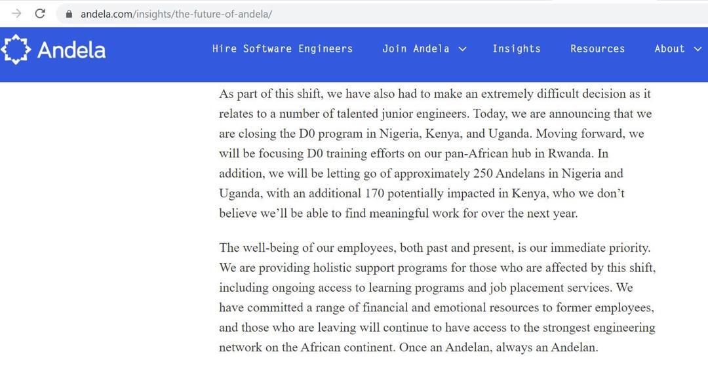

Michael Sunday Olawuni@OlawuniMike . Jan 27
This is my first twitter post this January, 2020. Continue reading meaningless post. Shey you get plenty time to waste abi. Kwontinu

Home

Michael Sunday Olawuni@OlawuniMike . Jan 27
Michael Sunday Olawuni@OlawuniMike . Jan 27
1- . Hobbies and Interest Trending
320.3k Tweets
2- . TachaNotTacha
320.3k Tweets
3- . DramaInTheHouse
320.3k Tweets
4- . Hobbies and Interest Trending
320.3k Tweets
@damilabi
@damilabi
@damilabi
@damilabi
© 2020 Twitter, Inc